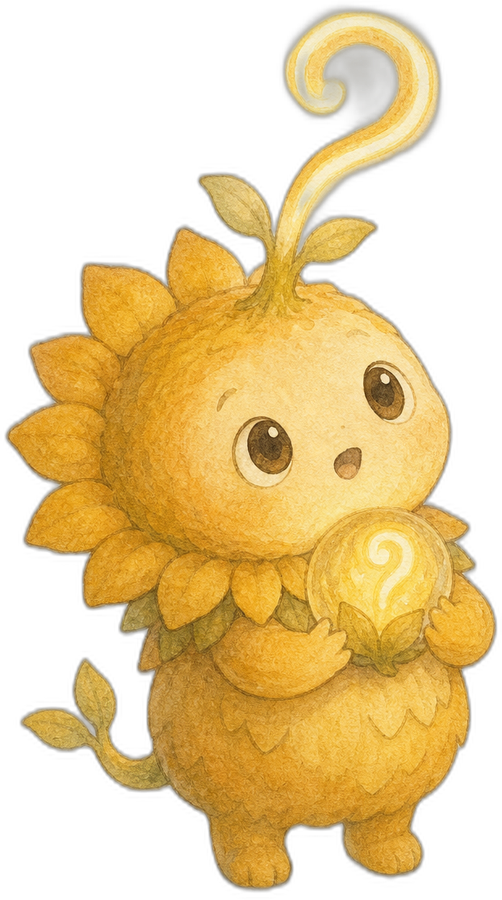
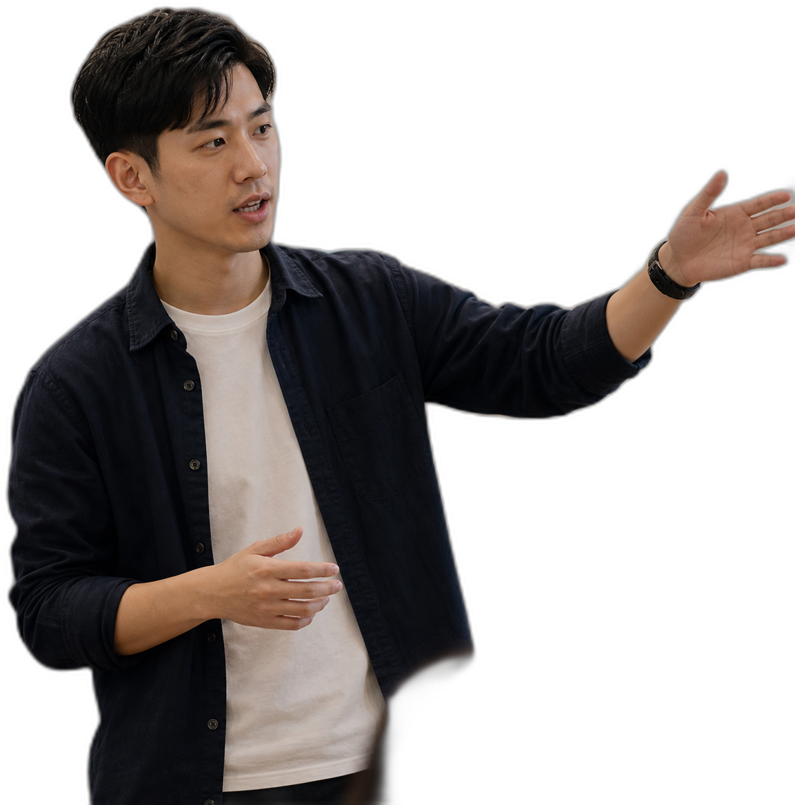

思
THINK
把模糊的焦慮變成具體問題。說不清楚的煩躁，先寫下來、拆開來，才有辦法被討論。

一場給 AI 焦慮者、實作者與提問者的 Open Space 聚會。往下捲，一路飛進漂浮議題園——把你的卡關種下去，看它長成新的想法。
不需要準備簡報，不需要是專家。一個卡住你的問題，就是最好的入場券。把它寫在便利貼上、種進議題牆——你會發現，原來卡住你的，也卡住了別人。
把模糊的焦慮變成具體問題。說不清楚的煩躁，先寫下來、拆開來，才有辦法被討論。
讓不同觀點互相校正。實作者、懷疑者、提問者坐在同一桌，答案在碰撞中長出來。
把討論轉成下一步行動。離場前每個人帶走一件可以立刻做的事，不讓靈感留在現場。

一個卡住你的問題，就是入場券。
卡住你的，也卡住了別人。
用腳投票，走向最有感的桌。
經驗、質疑、反例輪流上桌。
散場前寫下你的下一步。
不是聽講、不是滑手機。是兩個人為了一個問題爭得面紅耳赤，然後在某個瞬間，一起看見了新的答案。


每一種思辨能量，都有一隻對應的思辨獸。參加派對、丟出卡關、促成結晶，就能採集、解鎖牠們。
不是說教，是七個值得在派對上吵一架的問題。捲下去，穿過七座議題之島。
從 AI 焦慮出發，四個人決定不再自己悶著想，於是有了這場派對。滑過每張卡看看他們是誰。